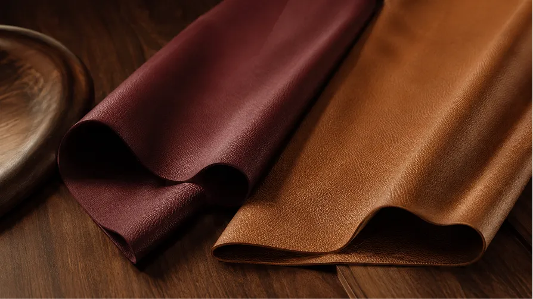

PVC Vinyl
Where It All Began
Our founding material and still our highest-volume line, PVC Vinyl combines dimensional stability, water resistance and colour retention for diverse applications.
With 7 Release Paper Transfer Coating lines, Mayur manufactures PVC Vinyl for applications across automotive, marine and heavy-duty furnishing.